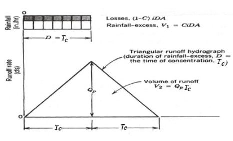

Rational Equation (Rainfall-Runoff) Model¶
A rainfall-runoff model is a mathematical model describing the rainfall–runoff relations of a rainfall catchment area, drainage basin or watershed. It produces a runoff hydrograph in response to rainfall inputs, represented by a hyetograph. In other words, the model calculates the conversion of rainfall into runoff.
A well known rainfall-runoff model is the Rational Equation model but it has limited applicability.
A slightly more general rainfall-runoff model is the linear reservoir, but it also has limited applicability.
Note
The limited appliciability is not problematic, and is intended to convey that you would use the model for situations where it is explicitly appropriate and recognize that outside its limits you are engaging in glorified guessing.
The rainfall-runoff model with a non-linear reservoir is considered more universally applicable, but still it holds only for catchments whose surface area is limited by the condition that the rainfall can be considered more or less uniformly distributed over the area.
The maximum size of the watershed then depends on the rainfall characteristics of the region. When the study area is too large, it can be divided into sub-catchments and the various runoff hydrographs may be combined using flood routing techniques.
Rainfall-runoff models need to be calibrated before they can be used.
The Rational Equation – A simplistic method for small areas¶
The rational method likely is the applied method used most often by hydraulic and drainage engineers to estimate design discharges for small watersheds. These design discharges are used to size a variety of drainage structures for small undeveloped and developed watersheds throughout the United States.
The rational method (Kuichling 1889) computes the peak discharge, Qp (in \(\frac{m^3}{s}\) in SI units or \(\frac{ft^3}{s}\) in English units), using:
where
\(C\) = runoff coefficient (dimensionless),
\(I\) = rainfall intensity
(\(mm/h\) or \(in/h\)) over a critical period of storm time (typically taken as the time of concentration, \(T_ C\)),
\(A\) = drainage area (hectares or acres), and
\(m_0\) = dimensional correction factor (\(\frac{1}{360} = 0.00278\) in SI units; \(1.008\) in English units).
From inspection of the equation, it is evident that \(C\) is an expression of rate proportionality between rainfall intensity and peak discharge (flow rate). The theoretical range of values for \(C\) is between 0 and 1. The typical whole watershed \(C\) values (that is, C values representing the integrated effects of various surfaces in the watershed and other watershed properties) are listed for different general land-use conditions in various design manuals and textbooks.
An on-line \(Q_p\) calculator has links to one such table.
The Texas Hydraulic Design Manual contains a useful discussion on appliciability and use of the Rational Method in drainage design.
Time of Concentration¶
The time of concentration is the crucial element of the Rational Equation (notably actually absent in an explicit sense from the equation).
The value of \(T_C\) is important in rational method for estimating rainfall intensity.
It is also used in many other hydrologic models to quantify the watershed response time.
Time of concentration \(T_C\) is the time required for an entire watershed to contribute to runoff at the point of interest for hydraulic design. It is calculated as the time for runoff to flow from the most hydraulically remote point of the drainage area to the point under investigation.
Travel time and \(T_C\) are functions of length and velocity for a particular watercourse.
A long but steep flow path with a high velocity may actually have a shorter travel time than a short but relatively flat flow path.
There may be multiple paths to consider in determining the longest travel time.
The designer must identify the flow path along which the longest travel time is likely to occur.
Various Methods to Estimate \(T_C\) include:
CMM pp. 500-501 has several formulas.
HDS-2 pp. 2-21 to 2-31 has formulas and examples.
LS pp. 196-198 has several formulas.
Some simple useful methods are examined in
The tools referenced in the above document are located below:
NRCS Upland (uses the graph pg 720 of Gupta). NRCS-Upland.xls; NRCS-Upland.xlsx
Kerby-Kirpich Kerby-Kirpich.xls;Kerby-Kirpich.xlsx
NRCS Velocity TXDOT-TIME-OF-CONCENTRATION-NRCS.xlsx
Modified Rational Method¶
The modified rational method (MRM) is a method to parameterize simple runoff hydrographs. The MRM produces a runoff hydrograph (and volume) while the original rational method produces only the peak design discharge. The rational method was originally developed for estimating peak discharge for sizing drainage structures, such as storm drains and culverts. The MRM, which has found widespread use in engineering practices since the 1970s, is typically used to size detention/retention facilities for a specified recurrence interval and allowable outflow rate.
The MRM was developed (Poertner, 1974) with the intent of using the rational method for hydraulic structures involving storage on small watersheds. The term “modified rational method analysis” refers to “a procedure for manipulating the basic rational method techniques to reflect the fact that storms with durations greater than the normal time of concentration for a basin will result in a larger volume of runoff even though the peak discharge is reduced” (Poertner, 1974, p. 54). Under this concept, the basic hydrograph is a triangle (below) generated by a rainfall duration D equal to the time of concentration Tc, and with a base equal to 2Tc. 
The MRM is based largely on the same assumptions used in the conventional rational method and is a conceptual extension of the rational method for development of runoff hydrographs (Viessman and Lewis, 2003). For the MRM a stormwater runoff hydrograph from a design storm intensity is approximated as either a triangular or trapezoidal hydrograph (depending on the relation between storm duration and time of concentration) with the peak (or plateau) discharge less than or equal to CiA, where C, i, and A have their conventional meaning.
Modified Rational Method Hydrograph Generator¶
This script performs discrete convolution to generate a direct runoff hydrograph from a hyetograph for a drainage area using the modified rational method unit-hydrograph approach (cite).
The direct runoff hydrograph is computed using a convolution integral:
where
\(p(t)\) is the excess rainfall hyetograph
\(u(t)\) is the drainage area response kernel (a unit hydrograph)
\(Q(t)\) is the direct runoff hydrograph
The response kernel for the modified rational method is
where
\(A\) is the contributing drainage area
\(T_c\) is the time of concentration
The excess rainfall hyetograph is obtained from the precipitation input signal as
where
\(C\) is the rational equation runoff coefficient
\(P(t)\) is a rainfall hyetograph (design storm)
The example script below illustrates the calculations for an NRCS Type 2 design storm, the other design storms are included and a simple change in storm type in the interp1d(minutes, type2, kind='linear') function call (i.e. change type2 to another type in the program). Alternatively the analyst could supply any hyetograph they choose, but would have to fuss a bit with the array lengths.
The script has several prototype functions:
Convolveis the discrete convolution integrator
kernelis the \(u(t)\) kernel function above
ModRatis the function that actually computes the time-shifted response kernel, scales inputs and outputs to produce dimensional outputs
After these prototype functions is a block that generates an input excess rainfall hyetograph. The next block is the input block, the actual function call to ModRat, some mass balance summary calculations.
Finally the plotting section prepares graphical output, reports the inputs, summary values in the chart title, and then charts the input hyetograph (an excess hyetograph, losses are already removed), and the direct runoff hydrograph.
###### INPUT BLOCK ############################################
PT = 4.7 # Total storm depth in inches #####INPUT VALUE
area= 103.9 # Drainage area in acres #####INPUT VALUE
C = 0.85 # Runoff coefficient #####INPUT VALUE
Tc = 140.0 # Time of concentration in minutes #####INPUT VALUE
hyetType = 'user' #####INPUT VALUE
# Design storm options are: 'type1','type1A','type2','type3','user'
# Manually insert user hyetograph below if hyetType = 'user'
usertime = [0,7,8.0000,9.0000,9.3333,10.0,24.0,48.0] #### INPUT VALUES IF ABOVE = "user"
userdepth = [0,0,0.4285,0.8571,1.0000,1.00,1.00,1.00] #### List lengths must be same
###############################################################
# Convolution Engine
#############################################
def Convolve(duration, excitation, kernel):
response = [0 for i in range(duration)] # populate response vector with zeros
# response = direct runoff hydrograph (unscaled)
# excitation = input rate in length per time
# kernel = unit response
for i in range(duration):
for j in range(i,duration-1):
response[j]=excitation[i]*kernel[(j-i)+1]+response[j]
return(response)
#############################################
# Kernel Engine
#############################################
def kernel(time,area,tc):
# area = drainage area (in acres)
# tc = time of concentration (in minutes)
if time > tc:
kernel=0.0
else:
kernel=area/tc
return(kernel)
##############################################
# Modified Rational Convolution
#############################################
def ModRat(area,runoff_coefficient,precipitation,time,Tc):
excess=[0 for i in range(len(precipitation))]
flow=[0 for i in range(len(precipitation))]
# Generate Excess Rainfall
for i in range(len(precipitation)):
excess[i]=runoff_coefficient*precipitation[i]
# Generate Unitgraph for Rational Method
# unitgraph<-(sapply(time,kernel,area,Tc))/sum(sapply(time,kernel,area,Tc));
unitgraph=[0 for i in range(len(precipitation))] # start with zeroes
accumulator=0.0
for i in range(len(precipitation)):
unitgraph[i] = kernel(time[i],area,Tc)
accumulator=accumulator+unitgraph[i]
# now rescale each by the accumulator
for i in range(len(precipitation)):
unitgraph[i] = unitgraph[i]/accumulator
# Apply discrete convolution
flow=Convolve(len(excess),excess,unitgraph)
flow = [area*(i) for i in flow]
return(flow)
###############################################
# Hyetograph Engine
###############################################
# SCS Type Curves
hour = [0,2,4,6,7,8,8.5,9,9.5,9.75,10,10.5,11,11.5,11.75,12,12.5,13.0,13.6,14,16,20,24,48]
minutes = [i*60 for i in hour]
type1 = [0,0.035,0.076,0.125,0.156,0.194,0.219,0.254,0.303,0.362,0.515,0.583,0.624,0.654,0.669,0.682,0.706,0.727,0.748,0.767,0.83,0.926,1,1]
type1A = [0,0.05,0.116,0.206,0.268,0.425,0.48,0.52,0.55,0.564,0.577,0.601,0.624,0.645,0.655,0.664,0.683,0.701,0.719,0.736,0.8,0.906,1,1]
type2 = [0,0.022,0.048,0.08,0.098,0.12,0.133,0.147,0.163,0.172,0.181,0.204,0.235,0.283,0.357,0.663,0.735,0.772,0.799,0.82,0.88,0.952,1,1]
type3 = [0,0.02,0.043,0.072,0.089,0.115,0.13,0.148,0.167,0.178,0.189,0.216,0.25,0.298,0.339,0.5,0.702,0.751,0.785,0.811,0.886,0.957,1,1]
from scipy.interpolate import interp1d
if hyetType == 'type1':
f = interp1d(minutes, type1, kind='linear') #Design storm options are: 'type1','type1A','type2','type3'
elif hyetType == 'type1A':
f = interp1d(minutes, type1A, kind='linear') #Design storm options are: 'type1','type1A','type2','type3'
elif hyetType == 'type2':
f = interp1d(minutes, type2, kind='linear') #Design storm options are: 'type1','type1A','type2','type3'
elif hyetType == 'type3':
f = interp1d(minutes, type3, kind='linear') #Design storm options are: 'type1','type1A','type2','type3'
elif hyetType == 'user':
minutes = [i*60 for i in usertime]
f = interp1d(minutes, userdepth, kind='linear') #Design storm options are: 'type1','type1A','type2','type3'
#
t24 = [float(i) for i in range(2881)] # time in minutes
d24 = f(t24) # cumulative proportional depths - difference to get rates
d24 =[PT*i for i in d24] # scale to total depth
r24 = [0 for i in range(len(d24))] # create destination
r24[0] = d24[0]
for i in range(1, len(d24)):
r24[i] = d24[i] - d24[i-1] # this will be inches/minute
r24[i]=r24[i]*60 # inches per hour
#############################################
# Build direct runoff hydrograph
#############################################
result = ModRat(area,C,r24,t24,Tc)
## Compute summary values
peakQ = max(result)
## Mass balances
totalQ = sum(result)*60/43560 # area under red curve == volume of discharge
totalR = C*d24[-1]*(1/12)*area
#adjust = totalR/totalQ
#totalQ=totalQ*adjust
massE = (totalR-totalQ)/totalR
#############################################
# Graphics engine
#############################################
xlow = -0
xhigh = 2880
import matplotlib.pyplot as plt # the python plotting library
# Plot script adapted from
plottitle ='Direct Runoff Hydrograph by Modified Rational Method Discrete Convolution\n \n'
if hyetType == 'type1':
plottitle = plottitle + 'Hyetograph Type: ' + 'SCS Type 1 Design Storm\n'
elif hyetType == 'type1A':
plottitle = plottitle + 'Hyetograph Type: ' + 'SCS Type 1A Design Storm\n'
elif hyetType == 'type2':
plottitle = plottitle + 'Hyetograph Type: ' + 'SCS Type 2 Design Storm\n'
elif hyetType == 'type3':
plottitle = plottitle + 'Hyetograph Type: ' + 'SCS Type 3 Design Storm\n'
elif hyetType == 'user':
plottitle = plottitle + 'Hyetograph Type: ' + 'User Supplied Design Storm\n'
plottitle = plottitle + 'Hydrograph Type: ' + 'Modified Rational\n'
plottitle = plottitle + 'Contributing Drainage Area: ' + repr(area) + ' acres\n'
plottitle = plottitle + 'Rainfall Storm Depth: ' + repr(round(PT,2)) + ' inches\n'
plottitle = plottitle + 'Runoff Coefficient: ' + repr(C) +'\n'
plottitle = plottitle + 'Time of Concentration: ' + repr(Tc) + ' minutes\n'
plottitle = plottitle + 'Peak Discharge: ' + repr(round(peakQ,1)) + ' cfs\n'
plottitle = plottitle + 'Total Discharge (Area under red curve): ' + repr(round(totalQ,1)) + ' acre-feet\n'
plottitle = plottitle + 'Total Excess Rain (Area under blue curve): ' + repr(round(totalR,1)) + ' acre-feet\n'
plottitle = plottitle + 'Mass Balance Relative Error : ' + repr(round(100*massE,2)) + ' percent\n'
# Create a figure and axis object
fig, ax1 = plt.subplots(figsize = (10,10))
# Create the first plot on the left y-axis
ax1.step(t24, r24, color='blue', label='Intensity')
ax1.set_xlabel('Time (minutes)')
ax1.set_ylabel('Intensity (in/hr)')
# Create a second axis object for the right y-axis
ax2 = ax1.twinx()
# Create the second plot on the right y-axis
ax2.step(t24, result, color='red', label='Discharge')
ax2.set_ylabel('Discharge (cfs)')
# Add legend and show the plot
ax1.legend(loc='upper left')
ax2.legend(loc='upper right')
plt.xlim([xlow,xhigh])
plt.grid(b=True, which='major', axis='y')
plt.title(plottitle)
plt.show()
References¶
Gupta pp. 711-724
Aron, G., and Kibler, D.F. 1990. Pond sizing for rational formula hydrographs. American Water Resources Association Water Resources Bulletin, 26: 255-258.